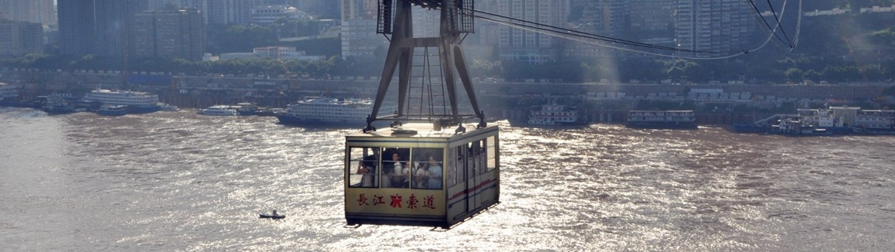

长江索道：重庆人的"空中公交车"，外地人的魔幻穿墙术
导航显示两地直线距离800米，排完队才发现要飞越长江——这个铁盒子把山城魔幻地理发挥到极致。本地人刷公交卡当通勤工具，游客攥着门票像捏着霍格沃茨车票，窗外的东水门大桥会突然从脚下翻到头顶。
抢靠窗位是门玄学。老司机都懂"北站出发靠右，南站上车贴左"的潜规则，不然洪崖洞全景会被隔壁大哥的后脑勺挡严实。当缆车启动瞬间，江风混着火锅味灌进来，对面楼阳台上晾的内裤突然放大十倍，这酸爽堪比坐过山车时吃小面。
轿厢里的众生相才是隐藏剧目。穿高跟鞋的网红边抖边直播："宝子们我现在悬空30层楼！"重庆崽儿淡定刷抖音："天天坐，闭着眼都晓得哪截钢丝该晃。"最绝的是挑着菜筐的嬢嬢，缆车过江时还能给游客指路："看那个洞洞，九十年代我们躲里头吃火锅！"
南岸站藏着穿越密码。出站右拐钻进白象街，24层没电梯的老楼把《火锅英雄》照进现实；左转上新街天桥，能拍出缆车从破旧民居头顶掠过的魔幻对比。索道职工食堂改的茶馆里，老师傅会翻出泛黄的值班表："1987年开通那天，票钱够买三斤猪肉呢！"
小贴士：工作日晚六点后刷重庆公交码，2块钱解锁本地人同款体验。南站观景台往弹子石方向走300米，老君洞道观的平台能拍到缆车与轻轨同框。别在车厢里戴帽子——江风分分钟把它变成朝天门的风筝。落地北站直奔沧白路，戴家巷崖壁咖啡馆的窗边位，正好能目送你刚坐的缆车再次启程。